No Sound Is Heard From the Speaker(s) (Display Is Normal) (With Navigation)
No sound is heard from speaker(s) (display is normal) (with navigation)NOTE:
- Set the fader and balance positions to the center.
- Before doing troubleshooting, do the power switch will not turn ON troubleshooting.
- On vehicles equipped with navigation and HandsFreeLink, verify the voice systems are not activated. Press each system's back button to return the audio unit to the normal operating mode.
- Always check the connectors for poor connections or loose terminals.
1. Check that the volume button is not set to the min level.
Is it at the MIN level?
YES - Raise the volume level, and recheck the function.
NO - Go to step 2.
2. Check the NAVIGATION VOICE MUTE COMMAND and HANDSFREELINK MUTE COMMAND.
Are the NAVIGATION VOICE MUTE COMMAND and HANDSFREELINK MUTE COMMAND set?
YES - Cancel the NAVIGATION VOICE MUTE COMMAND by depressing the voice command and HANDSFREELINK MUTE COMMAND back button, then recheck the function.
NO - Go to step 3.
3. Do the speaker check mode with the self-diagnostic function.
Did all speakers produce a tone?
YES - Go to step 10.
NO - Go to step 4.
4. Check the subwoofer for tone.
Did the subwoofer make a tone?
YES - Go to step 5.
NO - Go to step 28.
5. Turn the ignition switch OFF.
6. Check the faulty speaker(s) for damage.
Is there any damage?
YES - Replace the speaker and recheck.
NO - Go to step 7.
7. Remove the faulty speaker(s) that has no sound, and disconnect its connector.
8. Check the speaker connector for a loose or poor connection.
Reconnect the speaker connector, and recheck the symptom; is the condition still present?
YES - Go to step 9.
NO - Intermittent failure. Operation is normal.
9. Test the speaker(s).
Is the speaker OK?
YES - Go to step 10.
NO - Replace the speaker(s).
10. Do the audio unit self-diagnostic function DSP unit communication check.
Is the DSP communication OK?
YES - Go to step 11.
NO - Audio unit is faulty, replace the audio unit.
11. Disconnect stereo amplifier connector B (18P).
12. Turn the ignition switch ON (II).
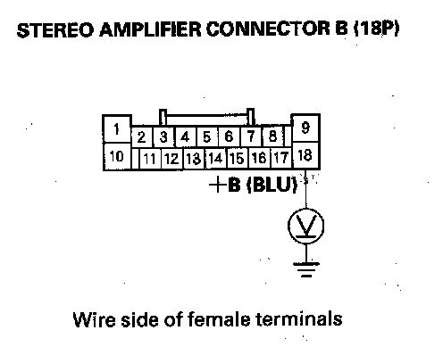
13. Measure the voltage between stereo amplifier connector B (18P) No. 18 terminal and body ground.
Is there battery voltage?
YES - Go to step 14.
NO - Repair open in the wire between No. 8 (30 A) fuse in the under-dash fuse/relay box and stereo amplifier connector B (18P) No. 18 terminal.
14. Disconnect stereo amplifier connector A (28P).
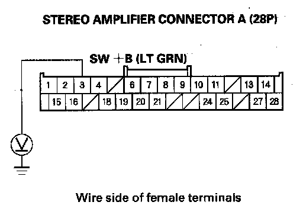
15. Measure the voltage between stereo amplifier connector A (28P) No. 3 terminal and body ground.
Is there battery voltage?
YES - Go to step 16.
NO - Repair open in the wire between the stereo amplifier connector A (28P) No. 3 terminal and audio unit connector B (32P) No. 23 terminal.
16. Reconnect the stereo amplifier connector B (18P).
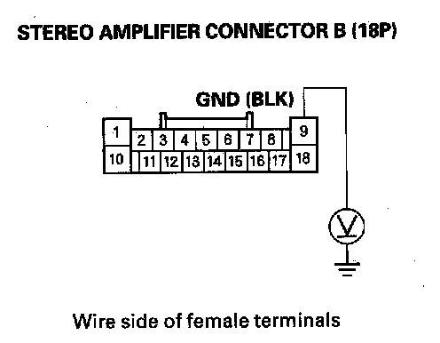
17. Measure the voltage between stereo amplifier connector B (18P) No. 9 terminal and body ground.
Less than 0.1 V?
YES - Go to step 18.
NO - Repair open to the body ground in the wire between the stereo amplifier connector B (18P) No. 9 terminal and body ground (G504).
18. Disconnect stereo amplifier connector B (18P) and speaker connector.
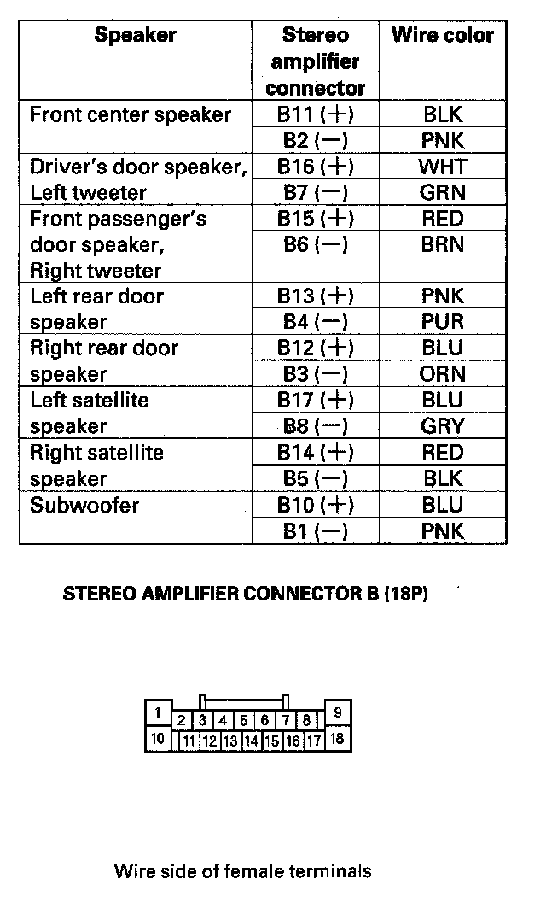
19. Check for continuity between body ground and stereo amplifier connector B (18P) according to the table.
Is there continuity?
YES - Repair short in the wire(s) between the stereo amplifier and the speaker(s).
NO - Go to step 20.
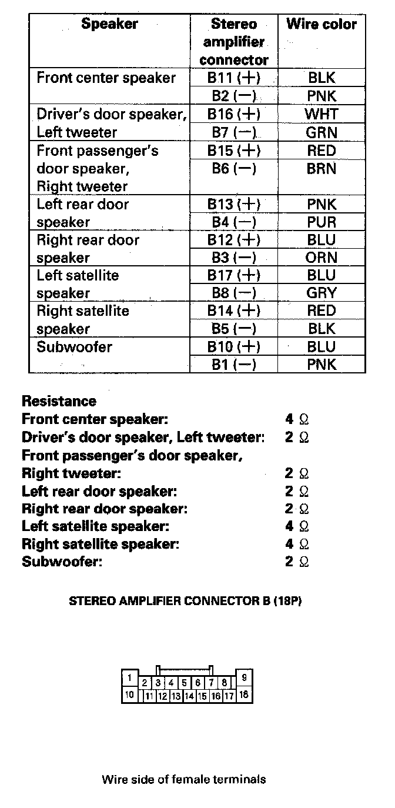
20. Measure the resistance between stereo amplifier connector B (18P) according to the table.
Is the resistance the same as indicated?
YES - Go to step 21.
NO - Repair open in the wire between the stereo amplifier and the speaker(s).
21. Disconnect audio unit connector B (32P).
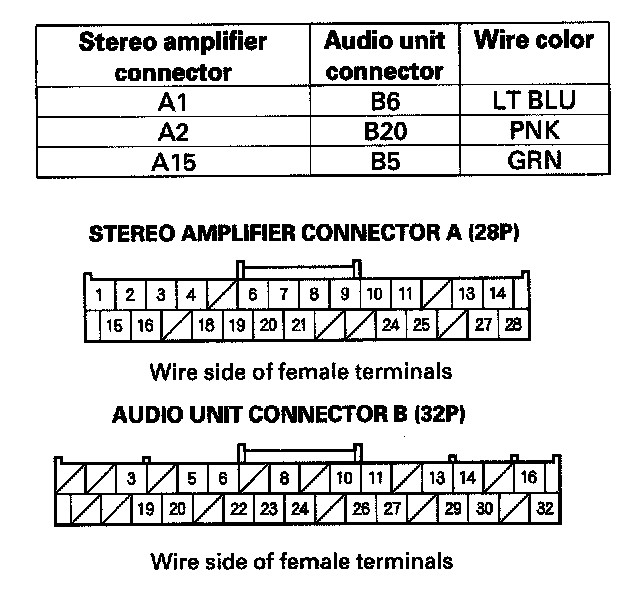
22. Check for continuity between the following terminals of the stereo amplifier connector A (28P) and audio unit connector A (32P).
Is there continuity?
YES - Go to step 23.
NO - Repair open in the wire between the stereo amplifier and audio unit.
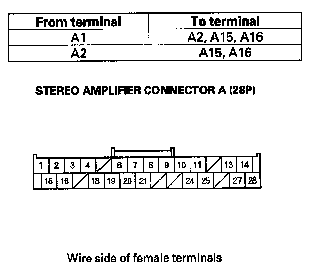
23. Check for continuity between the terminals of stereo amplifier connector A (28P) according to the table.
Is there continuity between any of the terminals?
YES - Repair short in the wire(s) between audio unit and stereo amplifier (replace appropriate shield harness).
NO - Go to step 24.
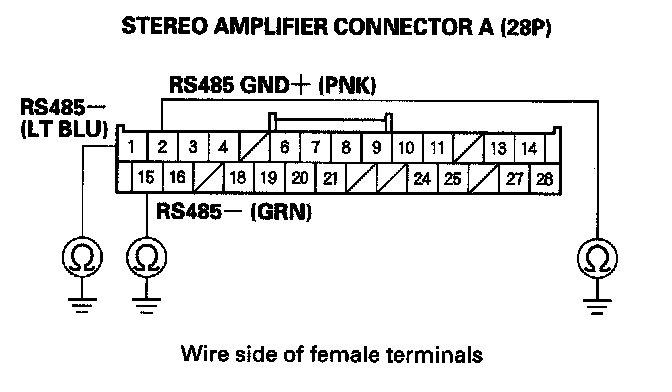
24. Check for continuity between body ground and stereo amplifier connector A (28P) terminal No. 1,2 and 15 individually. Then check for continuity between the same terminals listed in the table and the audio unit connector A (25P) No. 15 terminal (the harness shield).
Is there continuity?
YES - Repair short to body ground in the wire(s) between stereo amplifier and audio unit or short between the shield wires (replace the appropriate shielded harness).
NO - Go to step 25.
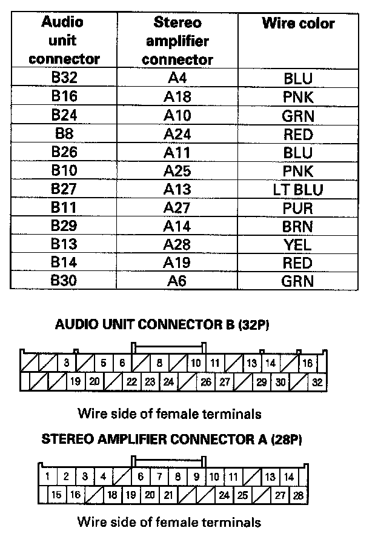
25. Check for continuity between audio unit connector B (32P) and stereo amplifier connector A (28P) according to the table.
Is there continuity?
YES - Go to step 26.
NO - Repair open in the appropriate wire(s) between the audio unit and stereo amplifier.
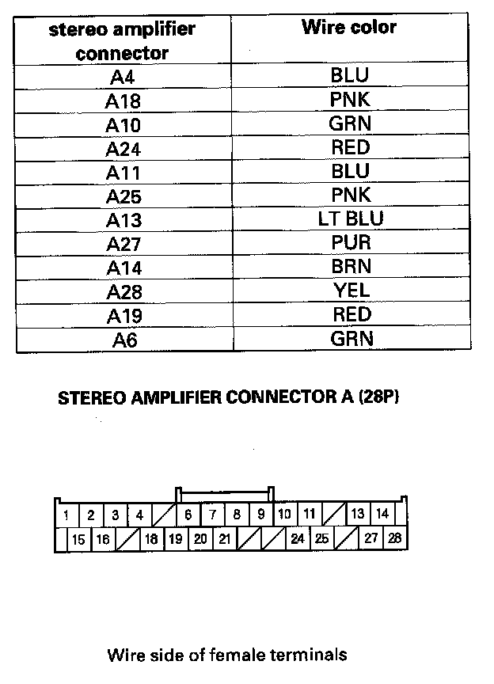
26. Check for continuity between stereo amplifier connector A (28P) and body ground according to the table.
Is there continuity?
YES - Repair short body ground in the wire(s) between the audio unit and stereo amplifier.
NO - Go to step 27.
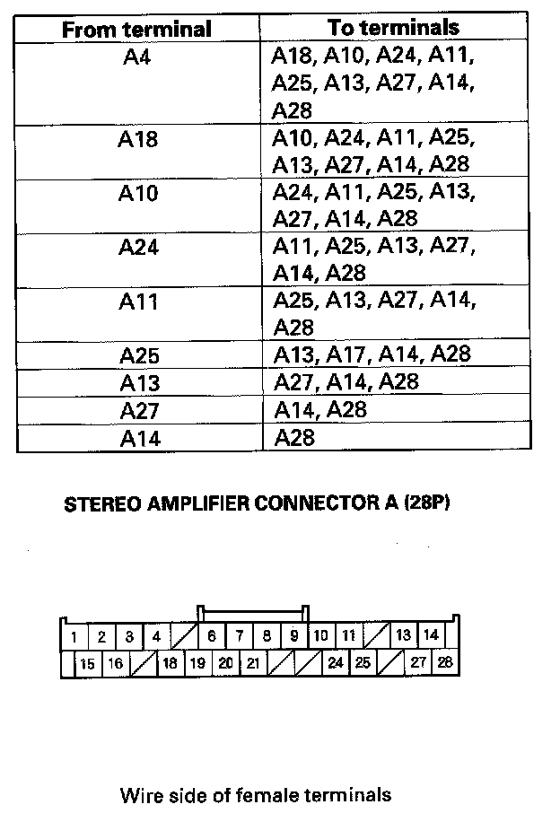
27. Check for continuity between the terminals of stereo amplifier connector A (28P) according to the table.
Is there continuity between any of the terminals?
YES - Repair short in the wire(s) between audio unit and stereo amplifier (replace appropriate shield harness).
NO - Substitute a known-good audio unit and recheck. If the symptom/indicated goes away, replace the original audio unit. If the symptom is still present, substitute a known-good stereo amplifier and recheck. If the symptom indicated goes away, replace the original stereo amplifier.
28. Disconnect the subwoofer 8P connector.
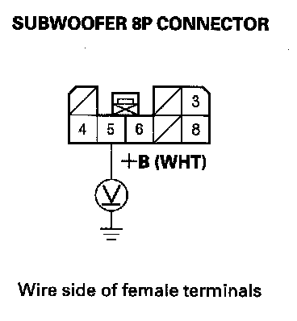
29. Measure the voltage between subwoofer 8P connector No. 5 terminal and body ground.
Is there battery voltage?
YES - Go to step 30.
NO - Repair open in the between the subwoofer 8P connector No. 5 terminal and No. 12 (10 A) fuse in the under-dash fuse/relay box.
30. Turn the ignition switch ON (II).
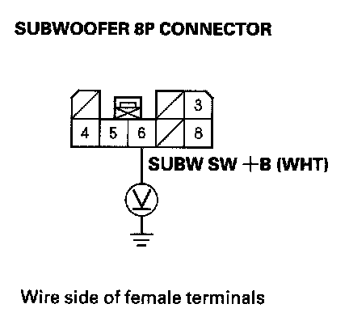
31. Measure the voltage between subwoofer 8P connector No. 6 terminal and body ground.
Is there battery voltage?
YES - Go to step 31.
NO - Repair open in the between the stereo amplifier connector A (28P) No. 20 terminal and subwoofer 8P connector No. 6 terminal.
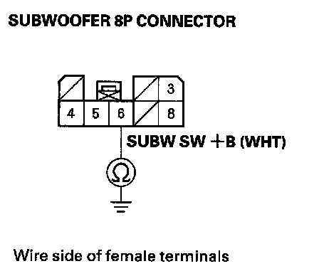
32. Check for continuity between body ground and subwoofer 8P connector No. 6 terminal.
Is there continuity?
YES - Repair short to body ground in the wire(s) between the stereo amplifier and subwoofer.
NO - Go to step 33.
33. Turn the ignition switch OFF.
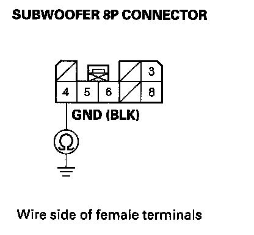
34. Check for continuity between subwoofer 8P connector No. 4 terminal and body ground.
Is there continuity?
YES - Go to step 5.
NO - Repair open to the body ground in the wire between the subwoofer 8P connector No. 4 terminal and body ground (G606).